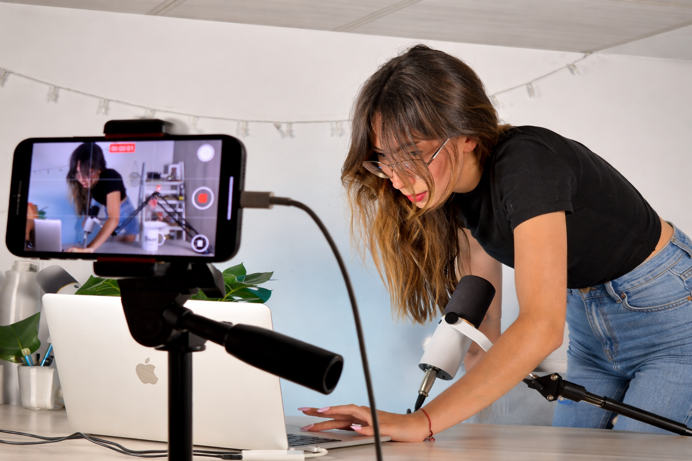

Omnichannel Communication Student
✦ Digital marketing & Content Creation ✢ Graphic design ✪ Video Editing
Based in Milan
Hi! I’m a student of Omnichannel Communication with a passion for everything digital.
I love bringing ideas to life using graphic design and video editing, skills I’ve developed
through my studies and work experience. I’m a curious person who’s always ready to learn
something new and take on new challenges with total commitment.
Outside of my studies, I host a podcast where I interview guests to share inspiring stories and
helpful advice.
My goal is to grow in the digital communication world, using my creativity and technical skills
to work on innovative and exciting projects.
